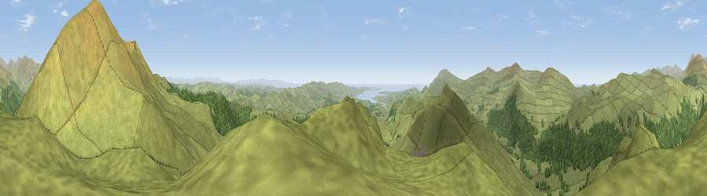

Fox Haw
#1070 in England · top 10% of its area beats it · near Hall DunnerdaleThe view, rendered

A 360° render of this exact spot computed from the terrain model, tree cover and land cover — summer colours, afternoon light, calibrated against photographs of famous viewpoints. Real trees, hedges and buildings will differ in detail.
The panorama
Grey silhouette: terrain skyline in each direction (720 bearings, Earth curvature and refraction included). Dashed green: skyline with trees (+15 m) and buildings (+8 m) as obstacles. Blue strip: how far the ground is visible on each bearing.
Where the view opens
Wedge length = distance to the farthest visible ground on that bearing (vegetation-aware). Rings at 10, 25 and 50 km.
What fills the view
87% grassland · 12% woodland ·
Angular shares of the visible panorama (visual magnitude), not map area. Landscape diversity 0.19 (0–1 Shannon).
Key numbers
More beautiful places nearby
The staircase of upgrades: each row has a higher view potential than everything closer. Driving times are estimates from straight-line distance, calibrated against real road routing — check an actual route before setting out.
| Place | Direction | Drive | Score |
|---|---|---|---|
| Caw | NE · 1 km | ~3 min | 83.4 |
| Brown Pike | NE · 5 km | ~10 min | 83.8 |
| Buck Pike | NE · 5 km | ~11 min | 84.2 |
| Old Man of Coniston | NE · 6 km | ~13 min | 85.2 |
| Whin Rigg | NW · 12 km | ~23 min | 87.5 |
| Viewpoint near Boot | NNW · 12 km | ~23 min | 88.9 |
| Viewpoint near Finsthwaite | ESE · 17 km | ~30 min | 90.3 |
| The Knoll | S · 407 km | ~388 min | 91.0 |
54.33405, -3.19606 · source: dobih hill · position refined by local search. Computed location — check access rights before visiting.